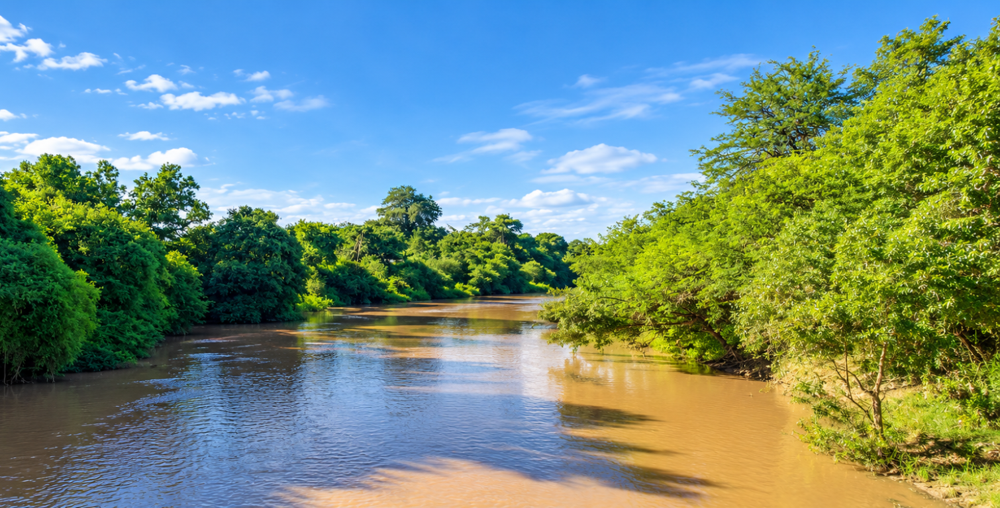

Actualidad
Lo que pasa en nuestra región, contado de cerca.
Selección editorial mientras se conecta el conteo de visualizaciones.
Somos un medio de comunicación que nace en el corazón del interior santiagueño con el objetivo de contar lo que pasa en las localidades ubicadas a la vera del río y la historia de nuestros pueblos.
Buscamos poner foco en las principales ciudades, localidades y parajes de los ocho departamentos que atraviesa el Salado en Santiago del Estero.
Contamos las noticias que importan a este sector de la comunidad santiagueña: inauguraciones, obras, acciones sociales, culturales, deportivas y recreativas; fiestas patronales, entre otras cosas.
Somos un portal que cree en un periodismo de cercanía, con la información chequeada y con respeto por nuestra gente.
Del Salado Noticias es tu lugar.